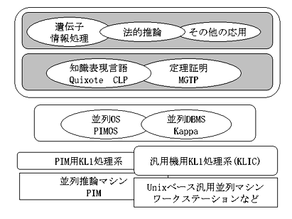

（後継プロジェクト）
ＩＣＯＴ・研究所所長 ／ 内田俊一
後継プロジェクトとは
ただ今ご紹介にあずかりました、ＩＣＯＴの研究所 長をしております内田です。今の渕一博先生のお話を 受けて、第五世代コンピュータ研究基盤化プロ ジェクトの総合報告ということで話をさせていた だきます。
このプロジェクトはご存知のように、平成５年４ 月より開始して来年の３月で終了するというもの で、第五世代コンピュータ・プロジェクトの成果 の幅広い普及を目的としており、第五世代プロ ジェクトの後継のプロジェクトということで、 「後継プロジェクト」とも呼んでいます。
今回のシンポジウムのポスター、案内ビラ等の あちこちに、タンポポの花が出てくることに皆様 お気づきかと思います。これは何故かというと、 第五世代プロジェクトを「タンポポの花を咲かせ るプロジェクト」にたとえ、後継プロジェクトを 「タンポポの花（第五世代の成果）に綿毛をつけ て、世の中に広く種を飛ばすプロジェクト」にた とえているわけです。この後継プロジェクトの役 割を象徴したいということで、このシンボルをあ ちこちに使っています。種というのは言うまでも なく第五世代コンピュータの技術ということでし て、「これに今、綿毛をつけて世界各地に飛ばして いますよ、このプロジェクトの目的が着実に達成 されつつありますよ」ということをお話するのが、 私の講演の主旨となっています。
後継プロジェクトの背景
後継プロジェクトが実施された背景を復習させ ていただきますと、このようになるのではないか と思います。（図１）
|
並列・分散処理の時代の到来 ハードウェア技術が先行し、汎用的並列処理の記述言語や プログラミング環境が欠如 第五世代プロジェクトの成果の位置付け 並列記号処理の言語と生産性の高いプログラミング環境 将来性のある知識処理のツールと応用ソフトウェア 基盤化プロジェクトの役割 第五世代技術をＷＳや汎用並列マシン上に移植し普及させる |
先ほどの渕先生のお話にもありましたし、皆さ んは我々よりもっと身近に時代の変化をお感じに なっていると思いますが、今、以前にも増して、 並列、分散という時代に突き進んでいると思いま す。その現象は、ハードウェア技術先行というこ とで現れてきていると思っています。特に最近、 大規模な並列ハードがいろいろなメーカから発表さ れ、市販されてきました。しかしながら、並列の 言語やソフトウェアはまだまだであると思いま す。このような並列ソフトの良し悪しが、今後の 並列処理や分散処理の重要なポイントになるだろ うということは明らかで、このような点から第五 世代プロジェクトの成果を見ると、非常に汎用 性、それから生産性の高い、並列処理言語、プロ グラム環境を提供している。また、将来有望と思 われる知識処理のツールとか応用ソフトの卵のよ うなものを提供していると見ることができたわけ です。
この基盤化プロジェクトはその辺を捉えて、そ ういう成果を、ＩＣＯＴが作った並列推論マシンとい う特定のマシン上だけではなく、世の中で広く使 われているワークステーション、特にUnixベース のワークステーンョンや並列マシンの上に載せ て、将来のコンピュータ技術や新技術開発の研究 基盤にしましょうということで開始されたわけで す。
後継プロジェクトの研究開発の目標は、これま で並列推論マシンの上でしか動かなかったKL1とい う言語の処理系や、並列応用PIMOSという、KL1 の上に載っている並列プログラムの作成環境、実 行環境を、Unixベースの逐次および並列マシンに 移すことです（図２）。
|
研究開発の目標
PIM上のKL1とPIMOS環境と同等なものをUnixベース
将来性のある知識処理のツールや応用システムを改良・ 普及活動の目標
大学・研究機関へ技術移転し、さらなる発展を期する。 |
また、後継プロジェクトでは、このような技術 的な目標だけでなく、作ったものを徹底的に普及 するという活動が、非常に重要なもう一つの目標と して認識されています。普及先としては、その成 果の性質上、国内外の大学および研究機関を考え ています。それらの機関で教育や研究のインフラ として使ってもらって、それを積極的に推進して いけば、将来における産業のデファクト・スタン ダードになるだろう、また、そうなるように努力 しようという努力目標を設定したわけです。
後継プロジェクトの目標と活動
このような後継プロジェクトを実施する体制で すが、ご存じのように、その前の第五世代プロ ジェクトを実施していた体制から移行する形で実 現致しました（図３）。
研究体制作り
１３億×２年間 研究所４０人＝２研究部＋研究計画部 外注ソフト開発要員 約５０人
|
後継プロジェクトは、日本のコンピュータ、情 報分野での最大級のナショナル・プロジェクト と言える第五世代 コンピュータのソフトランディングというような 役割も担っていたということができます。研究所 は平成４年度、これは第五世代プロジェクトの１１年 目にあたるわけですが、この間に９０人から４０人に 縮小しました。同時に、２０人の研究者をローテー ションにより新人へと入れ替えました。研究員の 数が減り、また、新人と入れ替わるということ は、当然の結果として、研究パワーが減少してく るわけです。そうなると、後継プロジェクトの研 究テーマをどうやって選ぶかとか、その為には誰 に残ってもらわなければいけないかとかいうこと が問題になってきます。これらについては、再委 託を担当していた各社と非常に密接な相談をさせ ていただきました。
また、予算面でも、各年度１３億円ということ で、当初私の思っていたことが充分できる額を通 産省で確保していただきまして、お陰で４０人プラ ス、ソフトウェアの開発要員５０人を確保すること ができました。この５０人の方は、十年選手とは言 わないまでも、第五世代プロジェクトに長く関 わっていた方ですので、プログラムを作成し、いろ いろなアルゴリズムを実現するという点に関して は優れた知識ベースをお持ちであったということ から、研究開発テーマの継続性がうまく維持でき たという結論となりました。
マシンに関しては、新たにUnixベースの汎用並 列マシンを購入しました。ハードよりも、その上 のUnixまわり、もしくは並列のためのソフトウェ アのライブラリ等が整っているものということ で、スーパー・サーバと呼ばれるものを手当てし た結果、プロセッサの台数は２０台規模とか１６台と か比較的小さいものになっています。こういうマ シンの他に、このプロジェクトで作った並列推論 マシンの５１２台構成、２５６台構成、６４台構成、３２台 構成を、それぞれ１台ずつ確保しました。これらの マシンは、並列応用ソフトの研究に非常に活躍致 しました。
後継プロジェクトの研究テーマ
後継プロジェクトの研究テーマ全体は（図４） のようになっています。従来は並列推論マシ ン上のKL1処理系がこれら全部の研究を支えていた わけですが、今度はこのUnixベースの汎用並列マ シンやワークステーションなどの上の汎用機用KL1 処理系、KLICと呼んでおりますが、これが出てく るわけです。KL1言語からC言語へコンパイルする ことを基本として移植しますので、KL1からC言語 ということでKLICという名前になっていると、設 計者の近山君が言っていたかと思います。

その他に、並列OSとか、並列データベース管理 ソフト、知識表現言語、定理証明、遺伝子、法的 推論などのテーマを残すことにしました。また、５ 種類作ったPIMのアーキテクチャの評価研究をしよ うというテーマがありまして、それを加えて合計７ つのテーマが後継プロジェクトのテーマとして選 ばれました。各研究テーマの詳細は、今日の午後 から明日にかけて各グループのリーダーや担当部 長が説明しますので、私は簡単にさわりの部分の みを紹介したいと思います。
最初の３つのテーマは、並列基本ソフトウェアと いうことで分類していますが（図５）、この中に、 先ほど申し上げたKLICシステムの開発というのが あります。KLICシステムは、まず、逐次型のワー クステーンョンで動くものを作って、すでにリ リースしており、非常に大勢の人に使っていただ いています。現在、それを核に並列マシン上で動 くものが作られ、ＩＣＯＴの中で使われていますが、 この開発もうまくいきました。ＩＣＯＴの中では KLICを使って、その他の応用ソフトや知識処理の ツールをUnix環境に移す作業が急ピッチで進んでいま す。
並列基本ソフトウェア
|
PIMのアーキテクチャの評価が二番目ですが、こ のPIMというマシンは、第五世代プロジェクトの本 当に最後、ギリギリで滑り込みセーフかアウトか 判定に難しいというぐらいのところで作りました ので、ほとんどきちんと動かさずに第五世代プロ ジェクトの中で完成したというだけでした。しか し、後継プロジェクトというチャンスが与えられ ましたから、では落ちついて評価してみようとい うことになりました。５つのモデルを担当した各 メーカ、担当者の方に集まっていただきまして、 タスクグルーブというのを作り、ベンチマーク・ プログラムを載せ、だんだん大きな応用プログラ ムを載せてきた、というように、いろいろと載せ替え て比べてみて評価データの分析をしました。これ で作りっぱなしにならずに、きちんと評価までで きたわけです。その結果は論文等にまとめられて いますし、明日の講演でもうまくプレゼンテー ンョンしてくれると思いますので、ぜひ、聞いて いただきたいと思います。他では得られないよう な、良い所も悪い所も含めた評価、結果が発表さ れると思います。
三番目は、並列・非正規関係データベース・シ ステムのKappaです。このテーマでは、PIM上で 開発されたkappaというデータベース管理ソフトをコ ンパクトにして、Unixマシンに載せようというも のです。Kappaというのは、拡張型の関係データ ベース管理システムで、通常の正規形の関係デー タベースと異なり、関係のテーブルの各枡目に複 数のデータを入れることができる、テーブルのネ スト構造を許しています。この結果、複雑なデー タ構造が出てきても少ないテーブル数で表現でき るということで、辞書とか遺伝子情報などの格納 に適していますが、処理が複雑になる分を並列処 理で稼ぐことにしています。後継プロジェクトで は、この機能を絞り込んだ上に、低レベルの処理 はC言語で書いて、KL1とC言語の混じったソフト として新たに作り直し、非常に高速かつコンパク トなものになっています。
知識処理ソフトウェア
次は知識処理ソフトウェアということで、ひと つのグループにまとめているテーマのいくつかを 説明します（図６）。担当は、先ほどの並列基本ソ フトが第一研究部で、こちらが第二研究部です。
知識処理ソフトウェア（１）
|
最初は、並列定理証明システムMGTPという ものです。これは、応用ソフトの中では非常に成 功した部類のものです。定理証明の処理は、ツ リー構造の探索をするということになっています ので、並列処理がうまく適応できるに違いないと 言われていたわけですが、その割にはツリー構造 が非常に不規則である。また、そのツリーの枝が どういうふうに伸びるかは、実行時にしかわからな いということなので、それまでの技術では並列処 理の適応は非常に困難と言われていました。定理 証明のグループは、第五世代プロジェクトの後期 に並列処理の効果的な適応に成功し、プロセッサ 台数にほぼ比例した処理速度の向上を達成しまし た。当初２５６台のPIM/mを用いて、２００倍以上の高 速化が起こったわけです。これは、我々の知る限 り、知識処理の大規模な応用でこのような高速化 が達成された世界で初めての例であるということ もあり、大変、元気づけられました。これが引き 金となって、他の応用にも同じような手法が次々 と適用され、台数に比例するような高速化が達成 されていきました。おかげでKL1言語や並列OS、さ らにPIMも含めた総合的なワーク・ベンチという か、土台の優秀さが証明されることになりまし た。速度的に言うと、その時点で最も速いと言わ れていたワークステーションなどから１００倍くらい速い ということがわかりました。１００倍速いと、質的に もいろいろ変化が起こり、それまで証明されていな かった定理が証明されるなどの新しい発見も可能 になりました。
後継プロジェクトで、MGTPはアルゴリズムや実 装方法を改良しました。具体的にツールとしても 使えるようになると、知識表現言語のための推論 エンジンや法的推論システムのエンジンにすると いうような使われ方ができるまでに発展していま す。
次に知識表現言語についてお話します。ＩＣＯＴで は、論理に基づくデータベース、知識ベース、そ して知識表現言語を研究してきました。ところが 世の中では、演繹的な論理に基づく言語の他に、 オブジェクト指向のデータベース、知識ベースの 研究も盛んになってきました。ＩＣＯＴでは、第五世 代プロジェクトの後期に、演繹とオブジェクト指 向、両方の機能を合わせ持つ、Quixoteと呼ばれる 言語を設計して処理系を開発したわけです。
Quixoteは、論理プログラミング言語の上にオブ ジェク指向の継承機能等も載せたことで、言語 としての表現力は高かったわけですが、処理系の 実装は非常に複雑になりまして、実際に使う際の 安定性に若干問題がありました。そこで後継プロ ジェクトでは、これを実際に使えるものにしよう ということで、言語仕様を改良したり、処理系を コンパクトにしたり、さらにKLICを使ってUnix環 境への移植も行ったりしています。ということ で、かなりコンパクトになりまして、来年の３月ま でには、実際に使える形になって世の中に出てい く予定になっています。
教育的見地からは、さらにコンパクトなものが 欲しいということで、Quixoteの機能を少し削っ た、μ-Quixoteというパソコン上でも動くものを 作りました。これは、教育用として大変便利に 使っていただいています。
このほか、第五世代プロジェクトでは、制約論理 プログラミング言語GDCCというものも開発していま して、これもKLICを用いてUnix環境に移植してい ます。
最近ではネットワークの時代になりまして、知 識ベース、データベース、いろいろなソルバがネット ワーク上に分散していて、そういったものを統合 的に扱えないかという問題にも目を向けました。 これは将来に向けての研究活動ですが、異種分散 協調問題解決システムという研究も始めています。
知識処理ソフトウェアの研究テーマとして、あ と二つあります（図７）。遺伝子情報処理システム と法的推論システムです。
知識処理ソフトウェア（２）
|
遺伝子情報処理システムは、第五世代プロジェ クトの後期において、並列推論マシンやKL1言語の 評価用ということで研究を開始したものです。当 時は、アメリカのアルゴンヌ・ナショナル・ラボ ラトリをはじめとする国立研究所の皆さんに大変お 世話になりました。我々は、非常に先端的な分子 生物学を彼らから学びまして、KL1でいろいろなプログ ラムを書いて、その評価ということでいろいろな面白 いプログラムを作ったわけです。
後継プロジェクトでは、もはや評価用プログラ ムを作るという領域をはるかに超えて、ＩＣＯＴの分 子生物学のグループは、さらに分子生物学の分野 に深く踏み込み、生物学者の方々に実際に使って いただけるようなツールを提供し、そちらの進歩 に貢献できるまでに至っています。実際には、並 列推論マシンを用いたDNAやタンパク質の非常に 高品質な配列解析とか、生物学の知識ベース、 データベース、また、タンパク質の構造解析など のツールを開発しています。その一部はKLICによ り、既に汎用並列マシン上に移植され、たとえば 東大の医科学研究所のCM5のようなところにも移 植する。そしてこれから生物学の方々にどんどん 使ってもらおうというようなところまで手が伸び ております。
法的推論システムというのは、これも後期に、 第五世代コンピュータのプロトタイプ・システム のハードウェアだけでなく、知識言語その他いろいろ な成果を総合的に評価するのにいいなと思って始 めたわけです。しかしながら、現在では評価とい うレベルをはるかに超えまして、法律の専門家と 共同研究をして、刑法の問題等を扱うというだけ ではなくて、実際に弁護士と検察の論争をシミュ レートするといった高級な機能までついていま す。そういう意味で、非常に柔軟かつ強力な推論 機構がソフトウェアとして実装され、さらにそれ が並列処理マシンの上に載っているという状況 で、ある意味では、ＩＣＯＴで作った中で一番インテ リジェントなシステムといえるところまできてい ます。
以上のような研究テーマに取り組み、幸いいず れも、世界のレベルの最先端をいく研究内容を維 持できています。そのテクニカルな内容は、本日 の午後以降、担当者が説明しますので、私はここ で非常におおざっぱに、何がアウトプットとして でてきたかという研究開発成果を説明したいと思 います（図８）。
KLIC逐次版の配付と移植
|
まず、後継プロジェクトの目玉であったKLICに ついては、逐次版が開発されています。これは汎 用マシンの上で使えるようになっていて、この種 の言語としては群を抜く高速性を発揮しており、 ＩＣＯＴの技術の集大成ともいえるものができていま す。１年前から配布していますが、評判が良く、 国内外で既に数百人の方に使っていただいていま す。特に授業の教材等に使っていただいているよ うで、大変喜んでいます。この逐次版を核にし て、現在、並列版を作っています。現在、ＩＣＯＴの 中ではその並列版を既に使っていまして、デバッ グしているところです。
そういう意味からすると、このシンポジウムで は、最新のツールを使ってデモンストレーション をしながらプレゼンテーションをするわけです。 私は今、プロジェクタをスライドと同じように 使っていますが、明日以降は、この中にオンライ ンのデモンストレーションが混じって出てきま す。そのようなデモンストレーションの中には、 ＩＣＯＴにあるスバークセンターとかDECのAXP7000 といった並列Unixマシンで動作しているデモもあ りますので、注意してご覧いただきたいと思いま す。
並列版のKLICは、現在ＩＣＯＴの外部の方々の協 力を得て、国内、海外メーカの並列マシンに移植 中です。ここ２、３か月の内に８機種以上に移植され る予定になっています。国産メーカ３機種や、IBM のSIMなど海外のマシンも、さらにそこに追加され る予定になっています。
ＩＣＯＴで開発されたソフトウエアは、全部ＩＣＯＴフ リーソフトウェアとして公開することになってい まして、先程、広瀬勝貞次長からもご紹介がありまし たように、昨日、新しいソフトウェアをフリーソ フトにしてよるしいという決定が下されたという ことなので、それを入れてちょうど１００本のソフト ウェアがフリーソフトとして出ていくことになり ます。
第五世代コンピュータ技術の普及活動
以上で研究開発の報告を終わりまして、今度は 普及活動の方に話を移したいと思います（図９）。
普及活動の枠組み
|
普及活動というのは、第五世代プロジェクトの 成果の性質上、国内、海外の大学や研究機関を主 な対象として行いました。第五世代プロジェクト および後継プロジェクトの研究開発成果のかなり の部分は、ソフトウェアという形で具体的にまと まっているわけです。しかしながら、基礎研究が メインでしたから、例えばKL1でプログラムを書く 時にどうやってモジュールを分けるかとか、負荷 分散をどのようにすればうまくいくか、それから 法律の条文その他を知識表現言語で書くときに、 状況理論等を使ってどうまとめたらいいかという ような、ある意味では先進的な成果というのは、 まとまっていないわけです。それらがどこにある かというと、一部は論文になっていますが、多く は研究員の頭の中という状況で、ＩＣＯＴの研究所が なくなると雲散霧消する可能性がありますので、 このような抽象的な研究成果をできる限り残した いと思ったわけです。
抽象的な成果の技術移転をどうするかというこ とを考えますと、第五世代プロジェクトに参加し ていた研究者間のヒューマンネットワークを維持 して、それとともにこれを発展させるというよう なことが方法として浮かびます。それを国内に限 らず、海外にも広げるということで、第五世代プ ロジェクトの間に築いたインターナショナルな ヒューマンネットワークも維持しようと心がけま した。これが全体的な普及活動の枠組みというこ とができます。
ヒューマンネットワークの構築
まず足下から何をやったかというと、ＩＣＯＴを中 心とするヒューマンネットワークの維持と構築で す（図１０）。まず最初に、タスクグルーブという ものを作りました。
|
第五世代プロジェクトが終了して、多くの人が 第五世代プロジェクト関係の仕事から離れていっ たわけです。そうすると、ＩＣＯＴの研究パワーは当 然減少するわけですが、あまり減少すると、後継 プロジェクトの研究や海外との共同研究の維持が できなくなる。そこで、研究パワーをどう維持し ようかということで考えたのがこのタスクグルー ブです。
このグループは、これまでＩＣＯＴに長い間協力し ていただいた大学の先生とか、ＩＣＯＴのＯＢとか、 新たに加わった大学の先生方をメンバーとして、 ＩＣＯＴの研究開発の一部を担当してもらう形で活動 をお願いしました。また、大学に対する普及活動 とか海外共同研究の支援をお願いするというよう な、いってみればＩＣＯＴの手助けをしてもらおうと いうことを第一に考えたグループです。
例えばＩＣＯＴは、後継プロジェクトのために２０人 くらいの新人を迎えました。ところが困ったことの一 つは、英会話の能力の低下です。どういうふうに 困るかというと、第五世代プロジェクトの後期 は、多くの研究員がＩＣＯＴに３年とか５年とかいまし たから、英会話もかなり上手なわけです。それが 海外の研究者にとっての標準になっていまして、 このくらいで話しても分かるんだという前提で会話す る。後継プロジェクトになってから新人が海外出 張すると、ＩＣＯＴの人ということで皆さんに大変歓 迎されて、ニコニコといろいろな外国の人が近寄って きてどんどん話しかける。話しかけられた方は、 分からなくてポカンとしている、それで逃げる、 という現象が起こりました。これには非常に困り まして、海外とのワークショッブを開く時には、 先輩としてのタスクグルーブメンバ一を同伴させ て、指導を仰ぎながらやることにしました。この ような点においても、いろいろご支援をいただきま した。このようにさまざまな形でご協力いただいてい るのが、このタスクグルーブです。
個々には説明しませんが、現在、タスクグルー ブは７つありまして、メンバーはＩＣＯＴの人を除いて 約９０人弱ぐらいです（図１１）。
|
ミーティングの開 催回数は月１回か２回ですが、最近はネットワーク が張り巡らされていますから、日常の情報交換は ネットワークを使ってやっていて、非常に密接 に、ＩＣＯＴの研究、普及活動を支援していただいて います。並列マシンの評価に関するタスクグルー プ、定理証明等、主要なテーマのひとつひとつに 大体ひとつ、タスクグルーブが設けられていま す。
次に、普及活動として具体的に何を行ったかを 報告させていただきます（図１２）。まず、KLICと いう逐次型の処理系ができて、それを広めるとい うことが急務だったわけでして、これに関して は、マシンを使ったプログラミング実習を含む講 習会を開催しました。大学の実習用の端末室を利 用させていただいているわけですが、最近、各大 学とも端末実習室というのが充実していまして、 ３０人から５０人を受け入れることができます。とい うことで、大学の皆さんにご協力をいただきまし て、国内５か所、海外１か所でそのような講習会を 開きました。
|
また、従来、ＩＣＯＴは大学から非常勤講師を頼ま れていましたが、第五世代プロジェクトの１０年余 りの間は、研究開発が忙しいのであまりお受けし ていませんでした。しかし、今年の前半だけは積 極的にお引き受けしました。半年で６コマから１０コ マの講義があるので、私を含むグループリーダー クラス８人でこれに対応しました。学部や大学院の 学生さんは、大変興味を持って聞いてくれました が、それを４大学６学科やるとなると、スケジュー リングがかなり大変でした。でもそれに余りある くらい、皆さん熱意を持って聞いていただけたと 思います。
ＩＣＯＴの研究所が無くなりますと、以後こういう 講義などもできなくなるわけですし、並列推論マ シンを使ったデモなども、もはや並列マシンもあ りませんからできないということで、これを今、 ４０分弱のビデオに収めてあります。今回のシンポ ジウム参加者にはこのビデオを無料でもっていっ ていただこうと思っています。
そのビデオの放映を入り口横のホールでやって いまして、皆さんのコンファレンスバッグの中に 入っている申込書を忘れずに送っていただきます と、締切以前に到着した分は無料でお届け致しま す。それ以後はとりあえず有料になるかと思って いますので、よろしくお願い致します。
その他の普及活動は、共同研究と委託研究を軸 にしました。共同研究は、従来、雷総研とは実に 密接にやっていましたが、途中から機械技研も加 わり、人の交流を含めて長いことやってきまし た。他に、第五世代プロジェクトの時には、関連 メーカ８社に委託研究という形でいろいろな研究をお願 いしていましたが、後継プロジェクトでは、この 再委託というのがなくなりました。それに伴い、 メーカに戻ったり、メーカにいて知識処理の研究 をしたりしている方々で、自主研究グループとい うのを作りまして共同研究をやったわけです。例 えば並列推論マシンの評価研究はこういった形で 実施しました。
先ほど、第五世代プロジェクトの成果の中に は、プログラミングの方法論とか負荷分散とか、 いろいろな抽象的な成果があって、こういった成果を どうしようか考えたという話をしましたが、これ らの抽象的な成果を、特に大学に移転しようと思 いまして、従来からご協力いただいている先生と か、ＩＣＯＴのＯＢで大学の先生になった方々の間で非 常に小規模な委託研究グループを編成しました。 このようなグループを国内で１５、海外で２つセット アップしまして、こういった委託研究から、面白 いアイデアや新たなKL1のソフトが生まれてくるこ とを期待しています。当然、この成果は公開しよ うと考えています。
委託研究テーマと委託先
参考までに、国内の大学との間でどのような委 託研究をしているかを紹介しておきたいと思いま す（図１３）。全部で１５テーマありますが、各テー マについては、こちらの趣旨を説明した上で、そ れぞれの先生方からご提案いただいています。
並列論理型言語の処理系と環境
|
まず、全体を４つのグループに分けました。その 中で、並列論理型言語に関係するテーマという が４つあります。その成果を、KLICの開発や普及に 生かそうというわけです。たとえば、プログラム の解析と最適化については、元々のKL1設計者の一 人のである上田和紀さんが早稲田にいっていますか ら、彼にお願いしているというように、相変わら ずこき使っていると言われるかもしれませんが、 ご協力いただいています。東大の田中英彦先生にも、 相変わらずお世話をいただいています。
また、定理証明のグループでは渕一博先生にも登 場していただいています。ＩＣＯＴの定理証明グ ループを作ったのは渕さんですので、相変わらず その後も面倒をみてもらっているということです （図１４）。
並列定理証明
|
自然言語処理については、ＩＣＯＴでは第五世代プ ロジェクトで自然言語処理の研究をやっていまし たが、後継プロジェクトではやめてしまったわけ です。というように研究開発をストップしたテー マについては、外の人にお願いするということに なりまして、３つぐらいのテーマを外の研究グルー プにお願いしています。ＩＣＯＴの無償公開ソフト は、これからの分も含めて１００本ありまして、その 中で自然言語処理に関するものは非常に多く使わ れています。なぜ使われているかというと、ＩＣＯＴ のＯＢで大学やメーカに戻った人がそのソフトを相 変わらず作ったり足したりしているからで、この 点でも、自然言語の研究は外において活発に実施 されているということがお分かりいただけるかと 思います。
その他の応用システム等で６つのテーマがありま す（図１５）。ここでも同じことで、例えば並列 VLSI-CADは、プロジェクト後期には結構面白い応 用として大規模に研究していたのですが、後継プ ロジェクトではやっていません。このあたりは、 人脈、成果を含めてＩＣＯＴのＯＢで神戸大学に行った瀧 和男先生に引き継いでいただいて、さらに発展させて もらっています。
応用システム等
|
委託研究や大学の先生という役割がどんなもの であるか、以上のような話からもご想像いただけ るかと思います。このようにＩＣＯＴのＯＢや先生方を 動員させていただきまして、有形、無形のＩＣＯＴの 研究成果があちこちに飛び散っていくように、広 まっていくように、工夫しているということで す。
海外普及活動
また、海外にも同じことをやりたいわけです （図１６）。海外との研究協力は、やはり第五世代 プロジェクトの時代に築いた色々な人脈、人間関 係を基に展開しています。このリストには、ＩＣＯＴ が覚書等を交換して、かなり大規模に共同研究を 展開したところのみをあげています。これ以外に も個人ベースで、非常に多くの海外の研究者の方 からＩＣＯＴは支援をいただきまして、その人間関係 を相変わらず維持しています。
|
第五世代プロジェクトから継続する研究協力
|
現在も活発に研究協力を行っている相手先とし ては、ＮＳＦ、スウェーデンのＳＩＣＳ、ＡＵＮ等があり ます。
ＮＳＦとＩＣＯＴは共同で日米ワークショップという のを開催しています。その５回目が今年の３月にオ レゴン大学で開かれました。このワークショップ は、並列プログラミング言語に関するワーク ショップでして、この時集まった皆さんについで にKLICの講習をしてくるというように、成果普及 も行っています。
また、スウェーデンのＳＩＣＳとは研究者が頻繁に 行き来しまして、論理プログラミング言語の処理 系などの研究情報やソフトウェアの交換をしてい ます。ＳＩＣＳの研究所長であるセイフ・ハリディ博 士、このシンポジウムのパネリストでもあります が、その方に今日も来ていただいています。
オーストラリア国立大学のマイケル・マクロ ピー教授のグループとは、並列定理証明の共同研 究をかなり密接に行っていたので、ＩＣＯＴがなく なって彼らの研究にも支障をきたすといけないとい うことで、KLICやMGTPのプログラムをオースト ラリア国立大学の計算機に移植して、そのまま使っ ていただけるような手当てをしようと思っており ますし、頻繁に研究者の行き来も行っています。 こういう形で海外にも成果をいろいろ持っていっても らうよう努力をしています。
以上お話したのは、第五世代プロジェクトの間 から続いていた協力関係ですが、後継プロジェク トになりまして、さらに一歩進んでもっと積極的 に、こちらから研究資金を提供して無償公開ソフ トの普及や実際のソフト作りを一緒にやってもら おうというプロジェクトを開始しました（図 １７）。そのひとつは、Prolog言語の育ての親と もいうべき、デピッド・ウォレン教授のいるブリ ストール大学が相手です。ここでは、KLICに組み 込むための新しいアイデアに基づく並列デバッグ の研究や、制約問題のソルバの研究をしていただ いています。またブリストール大学の研究者に、 研究ツールとして、また、教育のツールとして KLICを使っていただいています。
研究開発の一部と普及活動を委託
|
ＩＣＯＴフリーソフトウェア
以上のような普及活動によって、第五世代プロ ジェクトと後継プロジェクトで開発されたソフト は、国内外へ出ていっているわけです。このＩＣＯＴ 無償公開ソフトは、ＩＣＯＴフリーソフトウェアとい うことでＩＦＳと呼びならわされていますが、これが ちょうど１００本になっています（図１８）。これらを どのように出していったかといいますと、プロ ジェクト終了時点で７７本、後継プロジェクトの１年 目で７つ、来年の３月までになんとか１６出すという ことで、ちょうど１００ということです。
Internet上のanonymous FTPサーバによるＩＦＳの配付
|
その配布は、インターネット上のアノニマス FTPを使って持っていってもらっています。何本 持っていかれたかというのは、実はあまりよくわ からないわけです。孫引き、曾孫引きでいってし まうので、その分はＩＣＯＴでは分からないわけです が、ＩＣＯＴへのアクセスで数える限り、二千数百サ イト、一万数千本ほどです。
また、FTPの他に、最近皆さんよくインターネッ トの上でモザイクとかワールド・ワイド・ウェブ というお話をお聞きになると思いますが、こちら サービスを１０月から開始していまして、これに はハイバーテキスト、図面、写真、ムービーなど を入れられますから、単にソフトウェアだけでは なくて、第五世代プロジェクトと後継プロジェク トの最新の成果やPIMの写真、ついでに東京タワー の写真なども含めて出していまして、ＩＣＯＴの ニュースなども適宜流しています。こちらの方が はるかにアクセスの頻度が高くて、月だいたい８００ 以上で、どちらかというと、こちらに、もっと アップ・トゥ・デイトの情報を入れていこうと今 考えています。
ここでは、今まで書きためたＩＣＯＴのテクニカ ル・レポート、要するに技術論文のタイトル・リ ストも提供しています。タイトル・リストはいい のですが、では本体はどうしたのということにな ります。本体の方は、実は、文字情報として入れ るように保管していなくて、印刷物としてしか 持っていないので、ちょっと困ったんですが、そ れを写真にとって、CD-ROMに格納することにし ました。ＩＣＯＴ設立以来書きためた二千数百件の論 文が、４枚ほどのCD-ROMに入りました。ＩＣＯＴ の研究所がクローズした後、論文を読みたいとい う方も多いと思うので、このCD-ROMも、今回の シンポジウムの参加者には無料配布しようという ことにしています。
このCD-ROMの実物は、入り口の右でデモをし ていますので、お暇な折に見ていただきたいと思 います。CD-ROMについても、先ほどの最新成果 のデモ・ビデオと同様に、皆さんのコンファレン ス・バッグの中の申込書でお申込み下さい。これ もまた締切を設定しまして、それを過ぎると有料 になるかもしれないと考えていますので、是非、 今回お申込みいただきたいと思います。というこ とで研究所なき後も、このような形で皆さんのお 手元にいろいろなものがいくように工夫をさせていた だいています。
１９９５年３月に終了
以上お話しましたことをもう一度振り返ってみ ると、このプロジェクトには二つの役目があった と思います（図１９）。一つはこれまでお話してき たように、成果の普及という側面です。これは、 今お話したような形で、当初に意図したものはだ いたい実行できたかと思います。
後継プロジェクトの２つの役割
|
もう一つの役割は、第五世代プロジェクトのソ フト・ランディングということです。最盛期には 年間七十数億円の予算をいただいて、何百人もの 人が忙しく働いてくださり、使ったワークステー ンョンも１００や２００ではないわけです。最後には並 列推論マシンという大物も作りまして、人も物も 最大限抱えたプロジェクトとして最後に至りまし た。そういう人や物を含めて、また海外でＩＣＯＴの 成果を使って共同研究をしていただいたたくさん の研究者も含めて、徐々に縮小していき、「集中 から分散へ」という言葉そのままに、それぞれ参 加していただいた方がその期間内で最も適切と思 われる方向に分散していくのをエンカレッジする というのが、この後継プロジェクトのもう一つの 役割であったわけです。
先ほどの渕さんのお話にもありましたが、この 根幹となる技術が、幸い、時代の要請に合ってい たということもあって、メーカに技術を携えて 帰った人、大学に移った人等、ざっとみる と、仕事のチャンスや部署に恵まれているように 思います。その結果、非常に忙しくて困るという 人も多々いるわけですが、これはいいとしまし て、そういう恵まれた状況がそこに作り出され、 また、それぞれ行った先で活躍しているわけです。
また、現在まだＩＣＯＴに残っている人たちも同様 に、今後の仕事やポジションということで言いま すと、恵まれた状況にあるのではないかと思います。
皆さんそれぞれの新たな活躍の場所を得られた ということで、一つは済むわけですが、もう一つの 問題は開発したマシンの行く末でありまして、こ れはもうすでに通産省の方から発表がありました が、東大、北陸先端大、京大、九大、さらに上野 の国立博物館等に移設されます。また、PIMだけで なく、国立博物館にはPSIの１号機からずっと入る ことになっています。
最後まで使っていたPIMが、大学に移っていき、 次の時代を担う研究者、技術者の育成に使われ る。私は、PIMを作っていただくために、ここにい らっしゃる各メーカの皆さんに無理難題を持ちか け、幸いにしてたくさんの研究員の協力を得てPIM が完成したわけですが、そういったものが、その ままポッと捨てられるのではなくて、次の世代の 技術者、研究者を育てるという役目につくという ことを、非常に嬉しく感じています。ということ で、もらってくださる人には非常に感謝している わけです。
このように、ソフト・ランディングを含めて、 うまくいくということになりまして、ＩＣＯＴの研究 究所は予定通り、来年の３月でクローズします （図２０）。ＩＣＯＴの研究員は、それぞれのメーカや 出身母体に帰ったり、ある人は大学に行ったりと いうことになります。その後、ＩＣＯＴ無償公開ソフ トウェアが残るわけでして、ご存知のようにソフ トウェアというのはメンテナンスをする人がいなくなる と、死んでしまいます。そのあたりは、現在通産 省といろいろと相談させていただいていまして、最低 限配布の継続および保守を面倒見るグループ、そ れからマシンを残したセンターを置いて、２年くらい やっていくことができないかということで、ほぼ その方向で実現の見通しだと考えております。
今後の計画
|
ＩＣＯＴフリーソフトウェアというのは、その保守 だけではなくて、さらに将来性があるわけですか ら、できれば研究集団を作って、新たにＩＣＯＴフ リーソフトウェアを生み出すというような活動を したいなと考えています。先ほどの渕先生のお 話の中で、バーチャル・インスティテュートとい う言葉が出てきましたが、バーチャル・リサー チ・ラボラトリーというようなものを、インター ネット上に作りたい。この中に参画していただく 皆さんは、これまで協力していただいた大学の 生や、研究所、メーカにいるＩＣＯＴのＯＢその他、 ＩＣＯＴフリーソフトウェアに共通の興味を見いだ るような人を非常にゆるく結んで、その上で何か 活動したいと思っています。そのための予算措置 その他については、まだよく分かりませんが、関 係方面の協力を得ながら、そういうものが生み出 せればいいのではないかと、今、構想を練ってい る次第です。
第五世代プロジェクト、第五世代後継ブロジ クトを合わせて、一巻の終了ということで、私と しましては、今までご協力いただいた皆さんに改 めてここで感謝の意を表するとともに、今日の講 演のご清聴を感謝したいと思います。
どうもありがとうございました。